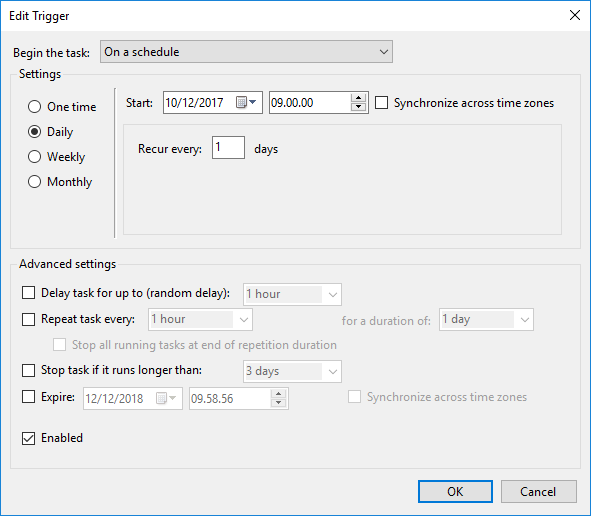

MPE Regtime Outlook
Outlook integration to Regtime
This document contains a description for the small program that makes it possible to synch you time registrations from a calendar in Outlook 365 to Regtime
Motivation
All the people I have talked to regarding regtime says the same thing, that it is not nice to work with and does not support their work flow or need for visualizing time as slots in a table. I have been one of thoose that needed a visual overview of how i spend my time during a day or week. This have not been something Regtime could give me and because of that Regtime was basically useless. I seaked to Outlook because we use it all the time and it could support my need for visualizing the hours spend. But there were still a problem - we still had to transfer the hours to regtime. So what I needed was a integration from my favorit time tracking tool (Outlook) to Regtime.
Regtime analysis
The piece of data displayed below is a print of all the data sent to regtime when you hit enter or the "Save" button. By looking at this we can split it up into different POST requests, one for A, O, F, and S registrations. To avoid regtime throughing a Null reference exception that polutes its log, I have added the "Referer" header with a value of. That way it shouldnt log a null reference exception when posting data to it only producing a 403 error which should not be logged.
AFBCaseId: A1234
AFromFB: false
Acustomer:
Aid:
Anote: A note
Aproject: Andet
Astatus: default
Atime: 2
FFromFB: false
Fid:
Fnote: F note
Fstatus: default
Ftime: 2
OFBCaseId: B1234
OFromFB: false
Ocustomer:
Oid:
Onote: B note
Oproject: Andet
Ostatus: default
Otime: 2
SFromFB: false
Sid:
Snote: S note
Sstatus: default
Stime: 2
entryDate: 10-12-2017
regdateA: 10-12-2017
regdateF: 10-12-2017
regdateO: 10-12-2017
regdateS: 10-12-2017
POST
Origin:
Upgrade-Insecure-Requests: 1
Content-Type: application/x-www-form-urlencoded
User-Agent: Mozilla/5.0 (Windows NT 10.0; Win64; x64) AppleWebKit/537.36 (KHTML, like Gecko) Chrome/62.0.3202.94 Safari/537.36
Accept: text/html,application/xhtml+xml,application/xml;q=0.9,image/webp,image/apng,*/*;q=0.8
Referer:
Accept-Encoding: gzip, deflate, br
Accept-Language: en-US,en;q=0.9,da;q=0.8
Cookie: XXX
We know that we have to login through the use of Windows authentication, that way we know how we should parse the authentication. This can be tested through the use of Postman. Calling the regtime..dk domain will give a 403 - not permitted. But if you add the credentials as Windows Authentication, it is possible to get a valid 200 - OK response back. So Regtime actually have a API :-O. This is something our HTTP request library supports :-D easy!!!
Walkthrough
The way the application is structured is fairly simple. You setup a configuration file describing all your favorite projects (it tends to be the only ones i need to use anyway), your username, the calendar in outlook, and optional your password in clear text (yes its a sin and god will smight me for it). If you dont define your password the program will prompt you for it when you use the application.
Example of a configuration file could be like the one displayed here:
{
"Username": "",
"Password": "",
"FbPassword": "",
"Calendar": "",
"Mobile": "",
"TextMessageApiKey": "",
"Customers": [
{
"Alias": "",
"Name": "",
"Projects": [
{
"Alias": "",
"Name": ""
},
{
"Alias": "",
"Name": ""
},
{
"Alias": "",
"Name": "",
"FbProject": ""
}
]
}
]
}
Here we have a customer called with the alias NC. It have three projects, each with a name and an alias. These alias for both customer and project are used when you create an event in you calendar defined in the configuration file.
Important: When you create a registration in the Outlook calender you have to use one of the following format:
[Alias of customer] - [Alias of project] - [Case number] - [Note]
SICK - [Note]
FLEX - [Note]
IGN - ...
The important part is that you include the correct number of dashes for each of the formats. When you have a FLEX entry but no note, you have to put a dash.
When you want to register time for the day, whenever that suits you, you should just execute the application that will prompt you for the password if not configured.
If you have specified a FbPassword and you use the first format, it will query FogBugz for the project associated with the case, and find the customer and project based on the mapping in the FbProject field for each project in the configuration.
Likewise if you have to add an entry that should be ignored, please feel free to use the IGN format. As long as there is a dash after IGN it will ignore it in the conversion process.
The application have these commands:
- config => displays the customers and their project configurations
- clear => clears the console
- single => takes you to a flow where you can register a single entry
- validate => validates the entries in the calendar on a specific date
- register => registers the entries from the calendar on a specific date (performs validation first)
When doing a register, the program output will look loke this:
> register
2017-12-07
CONGRATS - You are now ready for the registration of time...
Hours Case Customer Project Note
3,5 141134 XX YY ZZ
1 141143 XX YY ZZ
2,25 143034 XX YY ZZ
0,25 XX YY ZZ
Request sent for: 3,5 141134 XX YY ZZ
Request sent for: 1 141143 XX YY ZZ
Request sent for: 2,25 143034 XX YY ZZ
Request sent for: 0,25 XX YY ZZ
DONE...
>
This first validates all the outlook entries, and later on sends them to regtime.
Avoiding dual registrations
To make sure that it doesnt go on a rampage and just keeps adding registrations to Regtime that it already have synched, there have been added a security layer. This consist of a file where all the outlook entries are added to with their IDs. Each time, just before requesting regtime, it will check the collection of prior registrations to see if it have already added the record. If not in the collection it will request regtime. The file used for this is called "Registrations.json".
Scheduled configuration
One of the bullets in the "Further development" section was to make it execute an automated synchronization at a given time during the day. This is also possible for the sync program. The only thing you need to do is to setup a scheduled task that executes a powershell script each day at 09.00.
The powershell script it should execute is:
Set-Location $PSScriptRoot
.\MPE.Regtime.Outlook.App.exe --Command "register" --Date ((Get-Date).AddDays(-1).ToString('yyyy-MM-dd'))
What it does is to execute the console using some arguments instead of applying them as normal. Here it will register all the outlook entries from the prior day.
In case it does not validate a day, you will get a text message (number configured in Regtime.json config file) saying that:
Entries at yyyy-MM-dd is not valid - execute manually
The you can just execute a manual validation of the specific, find out what is wrong, edit it and do a manual synchronization. Just make sure that the scheduled task is dependant on the same Registrations.json file so the same outlook entries arent synched twice.
To register it as a scheduled task you should set it to trigger the following command as an action:
powershell -File "[Path to the file]"
The application have the following flags that can be used:
--Command
Defines the command that needs to be executed
--Date
Defines the date that the command should be executed on (normally all commands requires a date)
--ConfigurationFilePath
Defines the path to the configuration file used
Screen dumps
Setup in scheduled task runner


Known issues
- Make sure its your email defined as your username and it is the same that you uses for your email account as well as your Regtime credentials
- If your entries is not created in Regtime - please check your password
- It wont remove entries if already synched for that day - it can add new registrations from a synched day after the synched have happend
Further development
- Register O hours - currently not interesting for me, because of my arrangement with my boss
- Make it a centralized service located on a server. At nine o'clock every day it will send a text message with a link where you can type in you password and execute the synchronization.
- It should have a simple way of defining the config - one for each user
- Make a field in the configuration where it stores when it last ran a synchronization. If the computer is not on the internet for multiple days it should synch all the days since the last synch.